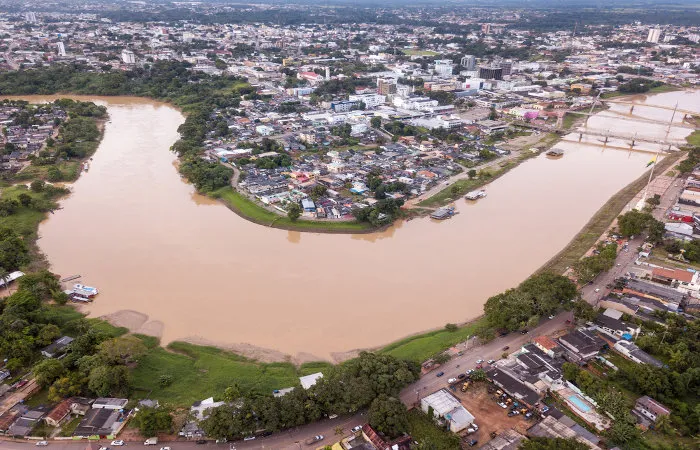

O Acre é um estado localizado na região Norte do Brasil, conhecido por sua floresta amazônica e pela sua história de luta pela conquista da sua autonomia. Sua capital é Rio Branco, uma cidade que mistura natureza e cultura local. O Acre tem uma história importante relacionada à Revolução Acreana, que resultou na sua incorporação ao Brasil em 1903, após um conflito com o Bolívia. Além disso, o estado é famoso por suas belezas naturais, como rios, florestas e áreas de preservação, ideais para quem gosta de ecoturismo.
